Turbulence modelling in neutron star merger simulations
- Ian Hawke
- Also Thomas Celora, Peter Hammond, Marcus Hatton, Alex Wright, Nils Andersson, Greg Comer, David Radice.
- See 2205.11377, 2108.08649, 2107.01083, 2402.03224.
- At Liv Rev Comp Astro (2024) 10:1.
- github.com/IanHawke
- STAG, University of Southampton
GW170817
-
One multimessenger detection.
- Gravitational waves;
- $\gamma$ - first detected;
- All EM band - long term.
- GWs seen for inspiral.
-
Constrains matter properties.
- Masses;
- Tidal compressibility;
- Equation of state.
- O4 finishes in October:
- Many more detections.
How does parameter estimation work?
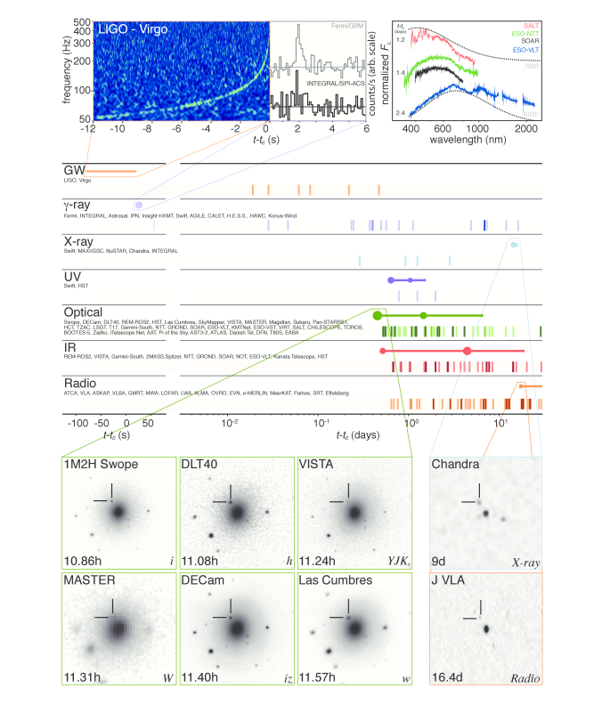
Parameter Estimation
Nonlinear simulations
- Needed for waveform models;
- Expensive;
-
Scales issues:
- $\Delta x \sim 100 \mathrm{m}$;
- $\Delta t \sim 10^{-7} \mathrm{s}$;
- Subgrid models needed.
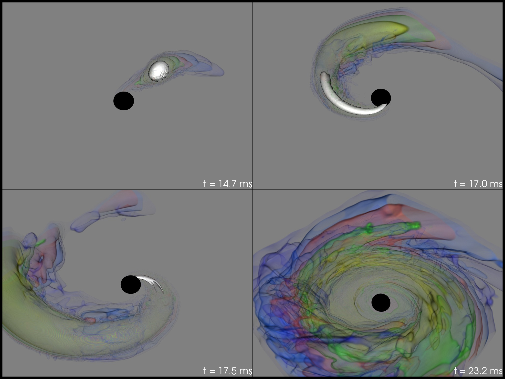
Neutron star merger
-
Merger is messy:
- Shearing instabilities;
- Temperature increase through shocks;
- Nuclear reactions.
- Urca reactions: $$ \begin{aligned} \text{n} &\to \text{p} + \text{e}^- + \bar{\nu}_e \\ \text{p} + \text{e}^- &\to \text{n} + \nu_e. \end{aligned} $$
- Keep track of species $Y_\text{e} \sim n_\text{e} / n_b$ by $$ D_t Y_\text{e} = \Gamma_\text{e}(n_b, T, Y_\text{e}). $$
- Urca timescale $\sim 10^{-8}-10^{-10}$ seconds: $< \Delta t$. Stiff: $\Gamma_\text{e} \gg 1$.
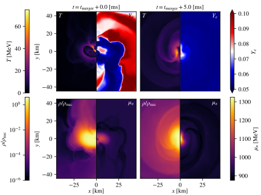
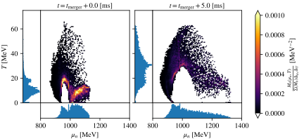
Reactions: Toy model
Approximate fluid equations, using $\theta = \nabla_a u^a$:
$$ D_t \begin{pmatrix} n_b \\ e \\ Y_\text{e} \end{pmatrix} = - \begin{pmatrix} n_b \theta \\ \left( e + p(n_b, e, Y_\text{e}) \right) \theta \\ {\color{red}\epsilon^{-1}} \left( A Y_\text{e} - B \right) \end{pmatrix}. $$Short timescale encoded in $\epsilon \ll 1$.
Assume $Y_\text{e} = Y_0 + \epsilon Y_1 + \dots$ and separate scales:
$$ \begin{aligned} \mathcal{O}(\epsilon^{-1}) & \colon & 0 &= -A Y_0 + B & \implies & Y_0 = Y_\text{eq} = F(n_b, e), \\ \mathcal{O}(\epsilon^{0}) & \colon & D_t Y_0 &= -A Y_1 \\ & \implies & Y_1 &= -A^{-1} D_t Y_0 \\ & & &= G(n_b, e) \theta. \end{aligned} $$Expand pressure:
$$ \begin{aligned} p(n_b, e, Y_\text{e}) &= p(n_b, e, Y_\text{eq}(n_b, e)) + \epsilon \partial_{Y_\text{e}} p Y_1 \\ &= p_\text{eq}(n_b, e) + \Pi, \\ \Pi &= -\zeta(n_b, e) \theta. \end{aligned} $$Appearance of bulk viscous pressure.
Reduced model:
$$ D_t \begin{pmatrix} n_b \\ e \end{pmatrix} = - \begin{pmatrix} n_b \theta \\ (e + {\color{blue} p_\text{eq} + \Pi}) \theta \end{pmatrix}. $$- No longer tracking species: always in equilibrium.
- Scales now tractable: $\Gamma_\text{e} \sim \epsilon^{-1} \to \Pi \sim \epsilon.$
Impact on GWs
- Do nonlinear merger simulation;
- Simulate with $\epsilon \to 0, \infty$;
- Filter out inspiral signal;
- Reactions "soften" EOS, $$\Delta f \simeq 58\textrm{Hz}$$
- Compute the mismatch between signals, $$ \mathcal{M} \sim 1 - \frac{\max \langle h_1 \vert h_2 (\sim \textrm{phase}) \rangle}{\sqrt{\langle h_1 \vert h_1 \rangle\langle h_2 \vert h_2 \rangle}} $$
- $$ \varrho_\textrm{req} \gtrsim 1 / \sqrt{2 \mathcal{M}} \quad = 1.2 $$ Limits are distinguishable in GWs by ET.
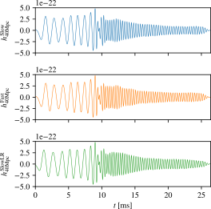


Turbulence: Toy model
Incompressible Navier-Stokes:
$$ \partial_t \mathbf{v} + {\color{red}{\mathbf{v} \cdot \partial_{\mathbf{x}} \mathbf{v}}} = - \frac{\nabla p}{\rho} + {\color{blue}{\nu \nabla^2 \mathbf{v}}}. $$1d modes, $v \sim \sum_k V_k(t) e^{i k x}$, implies
$$ \partial_t V_k + {\color{red}{\sum_{k'} i k' V_{k-k'} V_{k'}}} = \dots - {\color{blue}{\nu k^2 V_k}}. $$Final term is dissipation, $V_k \sim e^{-\nu k^2 t}$.
Advective term couples scales.
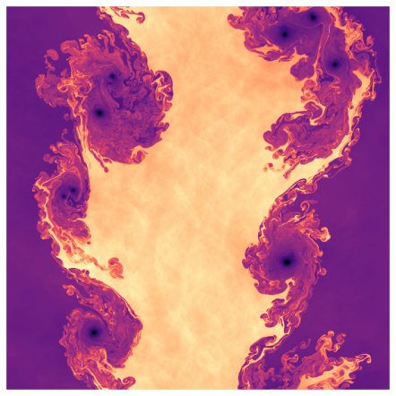
Reynolds Number
Dissipation scale $\ell_d \sim \mathrm{Re}^{-3/4} \ell_0$. Estimate for NSs:
- Neutrino diffusion: $\mathrm{Re} \sim 4 \times 10^6$ so $\ell_\nu \sim 1 \mathrm{cm}$.
- But $\lambda_\nu \gg \ell_\nu$, so ineffective.
- Electron scattering: $\mathrm{Re} \sim 5 \times 10^{15}$ so $\ell_d \sim 1 \mathrm{nm}$.
- MHD dominates below $\ell_B \sim 1 \mathrm{cm}$.
Numbers slightly larger in accretion disk.
Cost of DNS $\sim \mathrm{Re}^3$: can never resolve dissipation numerically.
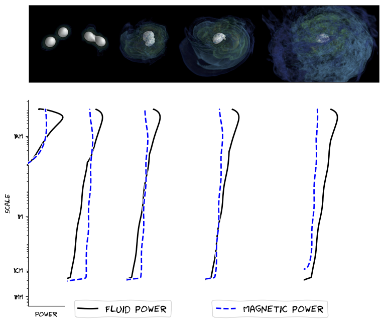
Reynolds equations
How do we model all scales using only information from large scales?
- Statistically: short scale is unknowable.
- Physically: short scale is model-able.
- Numerically: short scale is correctable.
Take Navier-Stokes, filter with $\mathbf{v} = \langle \mathbf{v} \rangle + \delta \mathbf{v}$:
The turbulence model gives the Reynolds stresses.
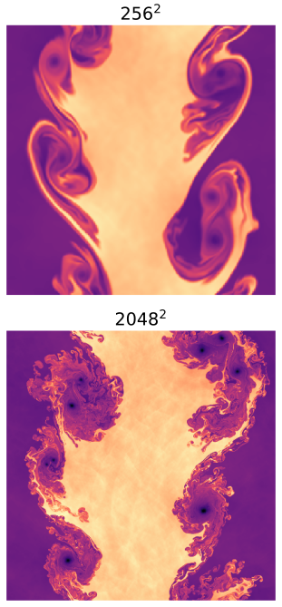
Relativity: Equations of motion
$3+1$ applied to $T_{ab}$ gives
$$ \partial_t \left( \sqrt{\gamma} \mathbf{q} \right) + \partial_j \left( \alpha \sqrt{\gamma} \mathbf{f}^{(j)} \right) = \mathbf{s}. $$Fluxes nonlinear: $\mathbf{f}^{(j)}_{S_i} = S^j_i + S_i N^j$. Closure gives
$$ \langle S_{ij} \rangle = \langle S_i \rangle \langle v_j \rangle + \langle p \rangle \delta_{ij} + \tau_{ij}. $$- EOS issue: $\langle p \rangle \ne p(\langle \rho \rangle, \dots)$;
- Recovering 4-velocity from $\langle v_j \rangle$ non-trivial;
- Not covariant: depends on slice normal $N^a$.
- Many closure options; see eg Radice, Viganò et al.
Relativity: the observer
- Define $U^a$ so that $\nabla_a \left( \langle j \rangle U^a \right) = \nabla_a J^a = 0$.
- Decompose $T_{ab}$ wrt $U^a$: splits into (non)-ideal parts.
- Average orthogonal to $U^a$, giving
- Covariant (up to observer choice);
- Same EOS issues;
- Same closure issues...
- but now can interpret closure terms "physically": particle drift, bulk/anisotropic pressure, etc.
Non-ideal model: first version
$$ \langle T^{ab} \rangle \sim \tilde{\epsilon} U^a U^b + (p + \tilde{\Pi}) \tilde{\perp}^{ab} + 2 \tilde{q}^{(a} U^{b)} + \tilde{\pi}^{ab} $$where $\tilde{\Pi} = - \zeta \tilde{\theta}, \tilde{q}^a \sim -\kappa \nabla^a \tilde{T}, \tilde{\pi}^{ab} = -\eta \tilde{\sigma}^{ab}$.
Best fit model assuming $\zeta, \kappa, \eta$ are $f(\tilde{T}, \tilde{n})$ is really poor.
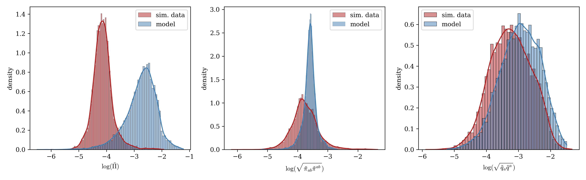
Non-ideal model: second version
Allow shear viscosity to be
$$ \log \eta \sim c_0 + \dots c_{\sigma^2} \log \sigma^{ab} \sigma_{ab} + c_{\omega^2} \log \omega^{ab} \omega_{ab}. $$Similar improvements are seen for the bulk viscosity case $\zeta$.
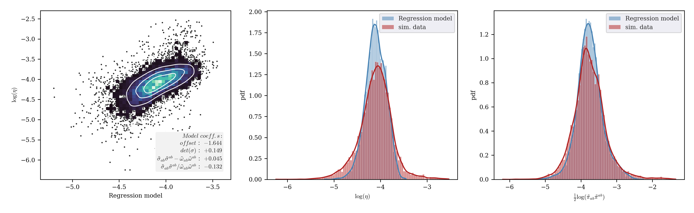
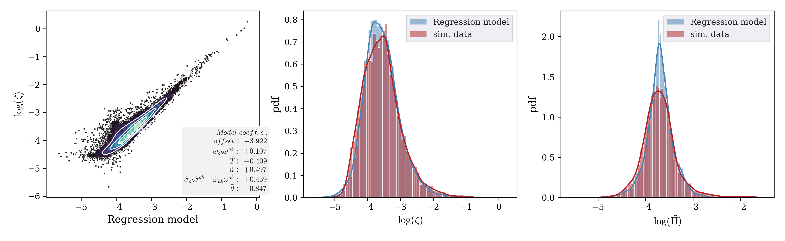
Magnetic field amplification: BLES
Before LES modelling, magnetized NS mergers
- saw the Kelvin-Helmholtz instability;
- saw the right early growth;
- failed to capture saturation.
- Best resolutions $\sim 10 \mathrm{m}$;
- Dissipation scales $\sim 1 \mathrm{cm}$.
Results depend on initial field strength. However, even unphysical values do not saturate correctly.
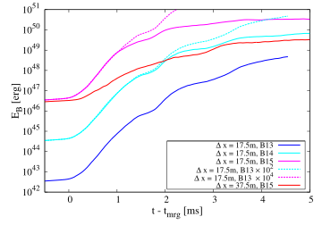
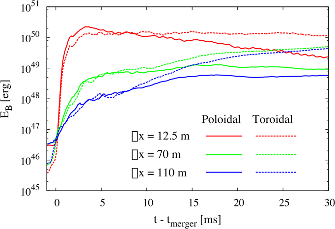
Magnetic field amplification: ALES
With LES modelling, magnetized NS mergers
- capture saturation;
- reach magnetar field strengths;
- show some universality (toroidal dominant);
- possible inverse cascade;
- possible $\alpha\Omega$ dynamo.
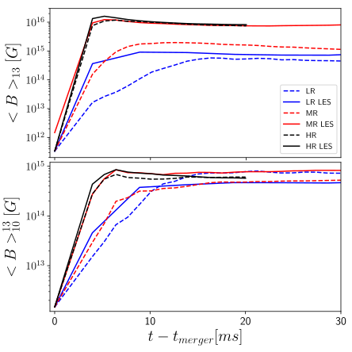
Summary
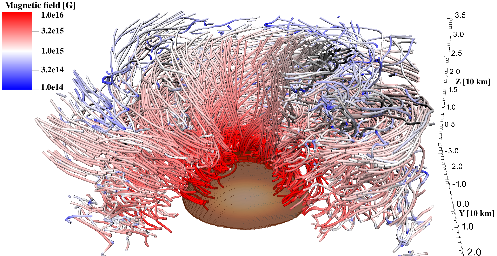
Turbulence models: a game that we have no choice but to play.
Impact of $\Pi$
Check with a "real" equation of state:
- Bulk viscous pressure can be big for neutron star core in merger;
- Bulk viscous approximation needed above dashed lines (resolution dependent).
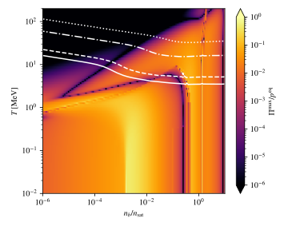
Kolmogorov
Turbulence has power $\sim k^{-5/3}$ if
- stationary
- homogeneous
- isotropic
- $\ell \sim$ inertial subrange.
"Proof" only in simple cases. Shown "experimentally" for
- compressible
- relativistic hydrodynamics
- MHD
- etc.
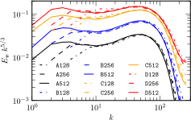
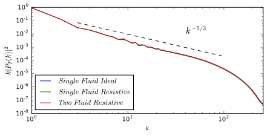
Boussinesq vs Numerics
Boussinesq
Decompose the stresses, use Boussinesq hypothesis:
$$ \begin{aligned} \langle \delta v^i \delta v_j \rangle &= K \delta^i_j + a^i_j \\ &= K \delta^i_j + \nu_T g^{il} \partial_{(l} \langle v_{j)} \rangle. \end{aligned} $$Gives effective pressure, viscosity
Numerics
Discrete approximation:
- $\partial_t \to (\mathbf{v}^{n+1} - \mathbf{v}^n) / \Delta t$,
- $\partial_x \to (\mathbf{v}_{i} - \mathbf{v}_{i-1}) / \Delta x$.
The approximate solution solves modified equation (to $\mathcal{O}(\Delta^3)$)
MHD issues
$$ T^a_{b,\; \mathrm{ideal}} \sim T^a_{b,\; \mathrm{ideal\, fluid}} + \underbrace{T^a_{b,\; \mathrm{EM}}}_{\sim F^a_c F^c_b} \, ; \quad \langle T^a_b \rangle \sim \tilde{T}^a_{b,\; \mathrm{ideal\, fluid}} + \underbrace{\tilde{T}^a_{b,\; \mathrm{EM}}}_{\sim \tilde{F}^a_c \tilde{F}^c_b} + \tau^a_b \, . $$Many choices can be made.
- Filter vector potential - linear ($\tilde{F}_{ab} = \nabla_{[a} \tilde{A}_{b]}$).
- Filter fields - nonlinear ($\tilde{F}^{ab} \ne \epsilon^{cdab} \tilde{b}_c U_d$).
- Filter current - Ohm's law nonlinear.
- Stress-energy residual $\tau$ can be "assigned" to fluid or Faraday part (non-ideal fluid, MHD, mix, or eg axions).
Uncertainty Quantification
We numerically solve the forward problem
$$ \partial_t \mathbf{U} = \mathcal{L}(\mathbf{U}; \mathbf{c}_{\mathrm{phys}}, \mathbf{c}_{\mathrm{num}}, \mathbf{c}_{\mathrm{filt}}). $$Coefficients $\mathbf{c}$ are uncertainties in physics, numerics, and model due to filtering.
UQ: predict observable $\mathcal{O}(\mathbf{c}_{\mathrm{phys}})$ for data analysts.
Data analysis then solve backward problem $\mathcal{O}_{\mathrm{observed}} \implies \mathbf{c}_{\mathrm{phys}}$.
Get rid of $\mathbf{c}_{\mathrm{num}}$ by improving resolution, varying IC/BC methods, etc.
Impact of subgrid model in $\mathbf{c}_{\mathrm{filt}}$. Potential confusion with $\mathbf{c}_{\mathrm{phys}}$ through EoS, model choices.
Filtering vs Coarse-graining
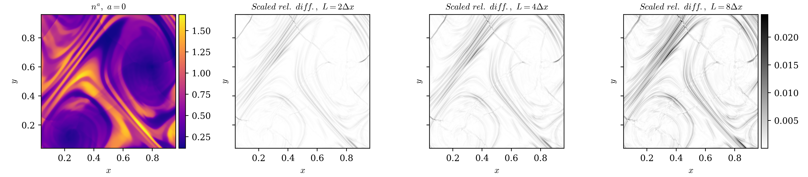
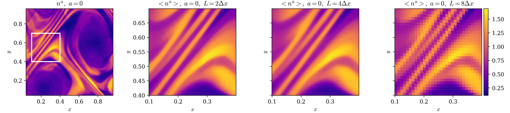
Non-ideal model: first version
$$ \langle T^{ab} \rangle \sim \tilde{\epsilon} U^a U^b + (p + \tilde{\Pi}) \tilde{\perp}^{ab} + 2 \tilde{q}^{(a} U^{b)} + \tilde{\pi}^{ab} $$where $\tilde{\Pi} = - \zeta \tilde{\theta}, \tilde{q}^a \sim -\kappa \nabla^a \tilde{T}, \tilde{\pi}^{ab} = -\eta \tilde{\sigma}^{ab}$.
Best fit model assuming $\zeta, \kappa, \eta$ are $f(\tilde{T}, \tilde{n})$ is really poor.
Non-ideal model: second version
Allow shear viscosity to be
$$ \log \eta \sim c_0 + \dots c_{\sigma^2} \log \sigma^{ab} \sigma_{ab} + c_{\omega^2} \log \omega^{ab} \omega_{ab}. $$Similar improvements are seen for the bulk viscosity case $\zeta$.
EoS assumptions
Should the EoS of the filtered model be the "true" EoS? Try fitting for $\Gamma$.
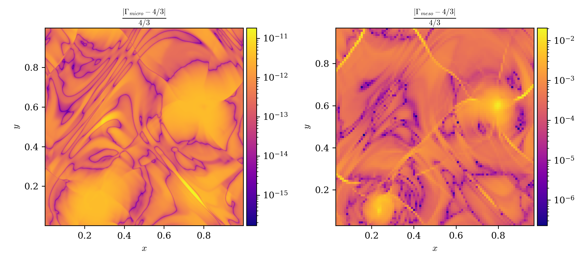